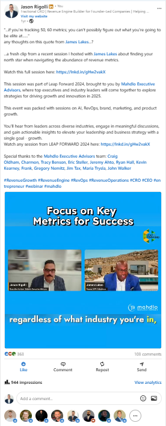
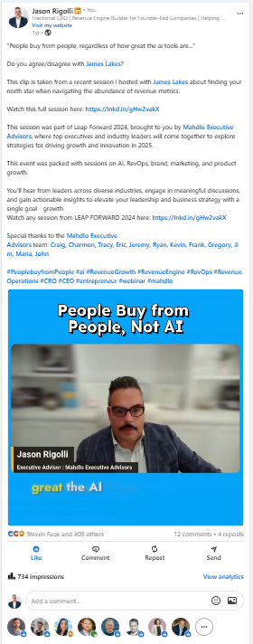

Most revenue dashboards measure activity, not health. The metrics that actually predict whether the engine is working are pipeline coverage, stage conversion rates, sales cycle length, CAC payback, net revenue retention, and forecast accuracy. Everything else is noise.
In the fast-paced world of sales and revenue operations, focusing on the right metrics can make or break your success. As a Chief Revenue Officer (CRO) or sales leader, you're likely bombarded with an overwhelming amount of data. But which RevOps metrics truly matter?
To help us navigate this complex landscape, we've tapped into the expertise of James Lakes, a seasoned executive with experience at tech giants like Microsoft, VMware, and Salesforce. James shares his insights on identifying and leveraging the most important RevOps metrics for driving business growth.
Clips from the James Lakes session
Two short clips from the Leap Forward 2024 session that informed this piece. Both landed on LinkedIn. These are the cuts that struck a nerve:
Click either LinkedIn post to play the clip in a centered window.


Key Categories of RevOps Metrics That Matter
James identifies four primary categories of sales metrics that every CRO should consider:
1. Quantity Metrics
These metrics focus on the volume of sales activities and provide insights into how you can scale your sales efforts. Key quantity metrics include:
- Number of leads generated
- Total sales calls made
- New logos acquired
2. Quality Metrics
Quality metrics assess the effectiveness of your sales efforts. Some important quality metrics are:
- Pipeline conversion rates
- Average deal size
- Lead quality scores
3. Sales Efficiency Metrics
These metrics help you understand how well you're utilizing your resources, both human and financial. Key efficiency metrics include:
- Sales cycle length
- Time spent selling vs. operational work
- Sales forecast accuracy
4. Sales Productivity Metrics
Productivity metrics measure the output of your sales team. Important productivity metrics are:
- Sales per rep
- Quota attainment
- Average sales per day
Strategies for Effective RevOps Data Management
With so many potential metrics to track, it's crucial to focus on what truly matters for your business. James recommends the following strategies:
Limit Your Focus
Choose 2-3 metrics per category. Don't try to track everything. As James puts it, "You can't possibly figure out what you're going to be elite at if you're tracking 50-60 metrics."
Understand Your Business Model and Customer Journey
Align your metrics with your specific business model and customer journey. This understanding will help you identify the most relevant data points for your organization.
Align Resources with Key Metrics
Once you've identified your core metrics, ensure that your team's efforts and resources are aligned to drive improvements in these areas.
Balance Data Analysis with Customer Interaction
While data is important, don't forget the human element. James emphasizes the importance of spending time with customers and getting out in the field with your sales team.
The Role of AI in Sales Analytics and RevOps
Artificial Intelligence is rapidly changing the landscape of sales analytics. However, James cautions against relying too heavily on AI without understanding the fundamentals of your business.
Benefits and Limitations of AI in Sales
AI can help synthesize complex data and optimize workflows, but it's not a replacement for human judgment and expertise. As James notes, "If you don't understand the fundamentals that are driving your business, I don't care what you point the AI at, you're not going to get what you're looking for."
Training Teams to Interpret AI-Generated Data
It's crucial to train your teams to effectively interpret and use AI-generated insights. Remember the adage: garbage in, garbage out. The quality of your input data directly affects the usefulness of AI-generated insights.
The Need for Real-Time Data in AI-Driven RevOps
James predicts that real-time data will become increasingly important in the AI-driven future of RevOps. This could enable more dynamic decision-making and optimization of sales processes.
Challenges and Opportunities in RevOps
As we look to the future of RevOps, several challenges and opportunities emerge:
Managing Increased Data Flow
With AI and other sources providing more data than ever, CROs will need to develop strategies to manage and make sense of this increased information flow.
Leveraging Real-Time Data for Better Decision-Making
Real-time data offers exciting possibilities for more agile and responsive sales strategies. James envisions a future where AI can provide instant insights on the potential impact of business decisions.
Addressing Sales Professionals' Concerns About AI
As AI becomes more prevalent in sales processes, it's important to address concerns from sales professionals who may see it as a threat to their jobs. James emphasizes that "people buy from people" and that AI should be seen as a tool to enhance, not replace, human sales skills.
In conclusion, successful RevOps in today's environment requires a careful balance of data analysis, human expertise, and strategic focus. By identifying the metrics that truly matter for your business and leveraging tools like AI judiciously, you can drive significant improvements in your sales performance and overall revenue growth.
FAQ
What are the most important RevOps metrics to track?
The most important RevOps metrics vary depending on your business model, but generally include a mix of quantity metrics (like number of leads generated), quality metrics (such as pipeline conversion rates), efficiency metrics (like sales cycle length), and productivity metrics (such as sales per rep).
How can AI improve sales analytics?
AI can help synthesize complex data, optimize workflows, and provide real-time insights to inform decision-making. However, it's important to use AI as a tool to enhance human expertise, not replace it.
How many metrics should a CRO focus on?
Focus on 2-3 metrics per category (quantity, quality, efficiency, and productivity). Trying to track too many metrics leads to lack of focus and diluted efforts.
What role does real-time data play in RevOps?
Real-time data is becoming increasingly important in RevOps. It allows for more agile decision-making and can provide immediate insights on the potential impact of business decisions.
How can sales leaders address concerns about AI in sales processes?
Sales leaders should emphasize that AI is a tool to enhance, not replace, human sales skills. Focus on training teams to effectively use AI-generated insights and demonstrate how AI can help sales professionals be more effective in their roles.
Frequently asked
Want to talk through what this looks like in your business?
30-minute working call. No pitch deck. We'll diagnose the biggest revenue lever in the business and say honestly whether this is the right next move.
Let's Meet